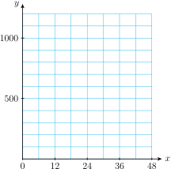
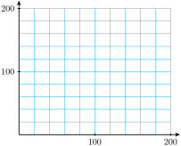
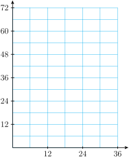
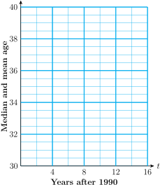

Section 2.2 Linear Systems
Subsection Systems of Equations
A biologist wants to know the average weights of two species of birds in a wildlife preserve. She sets up a feeder whose platform is actually a scale and mounts a camera to monitor the feeder. She waits until the feeder is occupied only by members of the two species she is studying, robins and thrushes. Then she takes a picture, which records the number of each species on the scale and the total weight registered.
From her two best pictures, she obtains the following information. The total weight of 3 thrushes and 6 robins is 48 ounces, and the total weight of 5 thrushes and 2 robins is 32 ounces. The biologist writes two equations about the photos. She begins by assigning variables to the two unknown quantities:
In each of the photos,
Thus
This pair of equations is an example of a linear system of two equations in two unknowns (or a \(2\times 2\) linear system, for short). A solution to the system is an ordered pair of numbers, \((t, r)\text{,}\) that satisfies both equations in the system.
Checkpoint 2.9. QuickCheck 1.
Choose the solution of the system:
\(\displaystyle (7,1) \)
\(\displaystyle (0,2) \)
\(\displaystyle (5,-2) \)
\(\displaystyle (2,5) \)
Subsection Solving Systems by Graphing
Every point on the graph of an equation represents a solution to that equation. A solution to both equations must be a point that lies on both graphs. Therefore, a solution to the system is a point where the two graphs intersect. The figure at right shows a graph of the system about robins and thrushes. The two lines appear to intersect at the point \((4, 6)\text{,}\) so we expect that the values \(t = \alert{4}\) and \(r = \alert{6}\) are the solution to the system. We can check by verifying that these values satisfy both equations in the system.
Both equations are true, so we have found the solution: a thrush weighs 4 ounces on average, and a robin weighs 6 ounces.
Checkpoint 2.10. QuickCheck 2.
True or false.
The point where two lines cross is called the intercept
True
False
The intercepts of a line are the points where it intersects the axes.
True
False
The solution of a system may occur at an intercept.
True
False
The words intercept and intersect mean the same thing
True
False
We can use a calculator to graph the equations in a system.
Example 2.11.
Use your calculator to solve the system by graphing.
We set the graphing window to
| \(\text{Xmin}=-9.4 \qquad\) | \(\text{Ymin}=-10\) |
| \(\text{Xmax}=-9.4 \qquad\) | \(\text{Ymax}=10\) |
and enter the two equations. We can see in the figure that the two lines intersect in the third quadrant. We use the TRACE key to find the coordinates of the intersection point, \((-2,-3)\text{.}\) The solution to the system is \(x=-2\text{,}\) \(y=-3\text{.}\)

The values we obtain from a calculator may be only approximations, so it is a good idea to check the solution algebraically. In the example above, we find that both equations are true when we substitute \(x = \alert{-2}\) and \(y=\blert{-3}\text{.}\)
Checkpoint 2.12. Practice 1.
-
Solve the system of equations
\begin{equation*} \begin{aligned} y \amp = -0.7x + 6.9\\ y \amp =1.2x - 6.4 \end{aligned} \end{equation*}by graphing. Use the window
\begin{equation*} \begin{aligned} \text{Xmin} \amp = -9.4 \amp\amp \text{Xmax} = 9.4\\ \text{Ymin} \amp = -10 \amp\amp \text{Ymax} = 10 \end{aligned} \end{equation*} Verify algebraically that your solution satisfies both equations
Answer:
Subsection The Intersect Feature
Because the TRACE feature does not show every point on a graph, we may not find the exact solution to a system by tracing the graphs.
Example 2.13.
Solve the system
We can graph this system in the standard window by solving each equation for \(y\text{.}\) We enter
and then press ZOOM \(6\text{.}\) If we trace along the graph to the intersection point, we will not find the same coordinates on both lines. The intersection point is not displayed in this window. Instead, we can use the intersect feature of the calculator.
Using the arrow keys, we position the Trace bug as close to the intersection point as possible. We then press 2ndCALC to see the Calculate menu. We press 5 for intersect, and respond to each of the calculator’s questions, First curve?, Second curve?, and Guess?, by pressing ENTER. The calculator then displays the intersection point, \(x = 4.36\text{,}\) \(y = -2.85\text{.}\)
We can substitute these values into the original system to check that they satisfy both equations.
Checkpoint 2.14. Practice 2.
Solve the system of equations
by graphing. Estimate the intercepts of each graph to help you choose a suitable window, and use the intersect feature to locate the solution.
Answer:
How does the calculator find the exact coordinates of the intersection point? In the next section we’ll learn how to find the solution of a system using algebra.
Subsection Inconsistent and Dependent Systems
Because two straight lines do not always intersect at a single point, a \(2\times 2\) system of linear equations does not always have a unique solution. In fact, there are three possibilities, as illustrated below.
Definition 2.15. Solutions of Linear Systems.
There are three types of \(2 \times 2\) linear system :
Consistent and independent system. The graphs of the two lines intersect in exactly one point. The system has exactly one solution.
Inconsistent system. The graphs of the equations are parallel lines and hence do not intersect. An inconsistent system has no solutions.
Dependent system. All the solutions of one equation are also solutions to the second equation, and hence are solutions of the system. The graphs of the two equations are the same line. A dependent system has infinitely many solutions.
Example 2.16.
Solve each system.
- \begin{gather*} y = -x + 5\\ 2x + 2y = 3 \end{gather*}
- \begin{gather*} x = \frac{2}{3}y + 3\\ 3x - 2y = 9 \end{gather*}
-
We use the calculator to graph both equations on the same axes. First, we rewrite the second equation in slope-intercept form by solving for \(y\text{.}\)
\begin{align*} 2x + 2y \amp = 3\amp\amp \blert{\text{Substract } 2x \text{ from both sides.}}\\ 2y \amp = -2x + 3\amp\amp \blert{\text{Divide both sides by 2.}}\\ y \amp = -x + 1.5 \end{align*}We enter the equations as
\begin{align*} Y_1 \amp= -X + 5\\ Y_2 \amp = -X + 1.5 \end{align*}You should see that the lines do not intersect within the viewing window; they appear to be parallel. If we look again at the equations of the lines, we recognize that both have slope \(-1\) but different \(y\)-intercepts, so they are parallel. Because parallel lines never meet, there is no solution to the system.
-
This time we will graph by hand. We begin by writing each equation in slope-intercept form.
\begin{align*} x \amp = \frac{2}{3}y + 3\amp\amp \blert{\text{Subtract 3.}} \\ x -3\amp = \frac{2}{3}y \amp\amp \blert{\text{Multiply by } \frac{3}{2}.}\\ \frac{3}{2}x-\frac{9}{2}\amp = y \end{align*}For the second equation,
\begin{align*} 3x - 2y \amp = 9 \amp\amp \blert{\text{Subtract } 3x.}\\ -2y \amp = -3x + 9 \amp\amp \blert{\text{Divide by } -2.}\\ y \amp = \frac{3}{2}x - \frac{9}{2} \end{align*}
The two equations are actually different forms of the same equation. They are equivalent, so they share the same line as a graph. Every point on the first line is also a point on the second line, and hence a solution of the system. The system has infinitely many solutions.
Checkpoint 2.17. QuickCheck 3.
Complete the statements.
If two lines have the same slope but different \(y\)-intercepts, the system is
dependent
inconsistent
consistent and independent
If two lines have the same slope and the same \(y\)-intercept, the system is
dependent
inconsistent
consistent and independent
If two lines have the same \(y\)-intercept but different slopes, the system is
dependent
inconsistent
consistent and independent
If both lines are horizontal, the system is
dependent
inconsistent
consistent and independent
Checkpoint 2.18. Practice 3.
-
Graph the system
\begin{equation*} \begin{gathered} y = -3x + 6\\ 6x + 2y = 15 \end{gathered} \end{equation*}by hand, using either the intercept method or the slope-intercept method.
-
Identify the system as dependent, inconsistent, or consistent and independent.
dependent
inconsistent
consistent and independent
Graph for part (a):

Subsection Applications
Systems of equations are useful in many applied problems. One example involves supply and demand. The owner of a retail business must try to balance the demand for his product from consumers with the supply he can obtain from manufacturers. Supply and demand both vary with the price of the product: consumers usually buy fewer items if the price increases, but manufacturers will be willing to supply more units of the product if its price increases.
The demand equation gives the number of units of the product that consumers will buy at a given price. The supply equation gives the number of units that theproducer will supply at that price. The price at which the supply and demand are equal is called the equilibrium price. This is the price at which the consumer and the producer agree to do business.
Example 2.19.
A woolens mill can produce \(400x\) yards of fine suit fabric if it can charge \(x\) dollars per yard. The mill's clients in the garment industry will buy \(6000 - 100x\) yards of wool fabric at a price of \(x\) dollars per yard. Find the equilibrium price and the amount of fabric that will change hands at that price.
-
Step 1.
We choose variables for the unknown quantities.
Price per yard: \(x\) Number of yards: \(y\) -
Step 2.
The supply equation tells us how many yards of fabric the mill will produce for a price of \(x\) dollars per yard.
\begin{equation*} y=400x \end{equation*}The demand equation tells us how many yards of fabric the garment industry will buy at a price of \(x\) dollars per yard.
\begin{equation*} y = 6000 - 100x \end{equation*} -
Step 3.
We graph the two equations on the same set of axes, as shown below. We set the window values to
\begin{align*} \text{Xmin} \amp = 0 \amp\amp \text{Xmax} = 94\\ \text{Ymin} \amp = 0 \amp\amp \text{Ymax} = 6200 \end{align*}and use the TRACE or the intersect command to locate the solution. The graphs intersect at the point \((12, 4800)\text{.}\)

-
Step 4.
The equilibrium price is $12 per yard, and the mill will sell 4800 yards of fabric at that price.
A business venture calculates its profit by subtracting its costs from its revenue, the amount of money it takes in from sales.
Cost is usually calculated as the sum of fixed costs, or overhead, and variable costs,the cost of labor and materials to produce its product. Revenue is the product of the selling price per item times the number of items sold. If the company’s revenue exactly equals its costs (so that their profit is zero), we say that the business venture will break even.
Checkpoint 2.20. Practice 4.
The Aquarius jewelry company determines that each production run to manufacture a pendant involves an initial setup cost of $200 and $4 for each pendant produced. The pendants sell for $12 each.
-
Express the cost \(C\) of production in terms of the number \(x\) of pendants produced.
\(C=\)
-
Express the revenue \(R\) in terms of the number \(x\) of pendants sold.
\(R=\)
-
Graph the revenue and cost on the same set of axes. (Find the intercepts of each equation to help you choose a window for the graph.) State the solution of the system.
Solution Give the solution as an ordered pair.
-
How many pendants must be sold for the Aquarius company to break even on a particular production run?
The must sell pendants to break even.
Exercises Problem Set 2.2
Warm Up
1.
Graph by the intercept method.
2.
Graph by the slope-intercept method.
3.
Solve \(~~0.4(30-x)+0.8x=0.65(30) \)
4.
Write each equation in the form \(ax + by = c\text{,}\) where \(a\text{,}\) \(b\text{,}\) and \(c\text{,}\) are integers.
\(\displaystyle 4y=6x-300\)
\(\displaystyle 24-\dfrac{2}{3}y=\dfrac{3}{4}x\)
Skills Practice
Exercise Group.
For Problems 5 and 6, solve the system of equations using the graph. Then verify that your solution satisfies both equations.
5.
6.
Exercise Group.
For Problems 7 and 8
-
Solve the system of equations by graphing. Use the "friendly" window
\(\text{Xmin}=-9.4 \qquad\) \(\text{Ymin}=-10\) \(\text{Xmax}=9.4 \qquad\) \(\text{Ymax}=10\) Verify algebraically that your solution satisfies both equations.
7.
8.
Exercise Group.
For Problems 9–12,
Graph the system by hand.
Identify the system as dependent, inconsistent, or consistent and independent.
9.
10.
11.
12.
Applications
13.
Francine wants to join a health club and has narrowed it down to two choices. The Sportshaus charges an initiation fee of $500 and $10 per month. Fitness First has an initiation fee of $50 and charges $25 per month.
Let \(x\) stand for the number of months Francine uses the health club. Write equations for the total cost of each health club for \(x\) months.
-
Complete the table for the total cost of each club.
\(x\) Sporthaus
total costFitness First
total cost6 12 18 24 30 36 42 48 -
Graph both equations on the grid.
 When will the total cost of the two health clubs be equal?
14.
The Bread Alone Bakery has a daily overhead of $90. It costs $0.60 to bake each loaf of bread, and the bread sells for $1.50 per loaf.
Write an equation for the cost \(C\) in terms of the number of loaves, \(x\text{.}\)
Write an equation for the revenue \(R\) in terms of the number of loaves, \(x\text{.}\)
Graph the revenue, \(R\text{,}\) and cost, \(C\text{,}\) on the same set of axes. State the solution of the system.
-
How many loaves must the bakery sell to break even on a given day?

15.
The manager for Books for Cooks plans to spend $300 stocking a new diet cookbook. The paperback version costs her $5, and the hardback costs $10. She finds that she will sell three times as many paperbacks as hardbacks. How many of each should she buy?
Let \(x\) represent the number of hardbacks and \(y\) the number of paperbacks she should buy. Write an equation about the cost of the books.
Write a second equation about the number of each type of book.
-
Graph both equations and solve the system using the grid.
 Answer the question in the problem.
16.
There were 42 passengers on a local airplane flight. First-class fare was $80, and coach fare was $64. If the revenue for the flight totaled $2880, how many first-class and how many coach passengers paid for the flight?
-
Write algebraic expressions to fill in the table.
Number of tickets Cost per ticket Revenue First-class \(x\) Coach \(y\) Total Write an equation about the number of tickets sold.
Write a second equation about the revenue from the tickets.
Graph both equations on graph paper and solve the system. (Hint: Find the intercepts of each equation to help you choose scales for the axes.)
Answer the question in the problem.
17.
Mel's Pool Service can clean \(1.5x\) pools per week if it charges \(x\) dollars per pool, and the public will book \(120 - 2.5x\) pool cleanings at \(x\) dollars per pool.
What is the supply equation?
What is the demand equation?
-
Graph both equations in the window
\(\text{Xmin}=0 \qquad\) \(\text{Ymin}=0\) \(\text{Xmax}=50 \qquad\) \(\text{Ymax}=125\) Find the equilibrium price and the number of pools Mel will clean at that price.
18.
-
Explain how you can tell, without graphing, that the system has no solution.
\begin{gather*} 3x=y+3\\ 6x-2y=12 \end{gather*} -
Explain how you can tell, without graphing, that the system has infinitely many solutions.
\begin{gather*} -x+2y=4\\ 3x=6y-12 \end{gather*}
19.
According to the Bureau of the Census, the average age of the U.S. population is steadily rising. The table gives data for two types of average, the mean and the median, for the ages of women. (The "mean" is the familiar average, and the "median" is the middle age: half of all women are older and half younger than the median.)
| Date | 1990 | 1992 | 1994 | 1996 | 1998 |
| Median age | \(34.0\) | \(34.6\) | \(35.2\) | \(35.8\) | \(36.4\) |
| Mean age | \(36.6\) | \(36.8\) | \(37.0\) | \(37.3\) | \(37.5\) |
Which is growing more rapidly, the mean age or the median age?
-
Plot the data for median age versus the date, using 1990 as \(t=0\text{.}\) Draw a line through the data points.
 What is the meaning of the slope of the line in part (b)?
Plot the data for mean age versus date on the same grid. Draw a line that fits the data.
Use your graph to estimate when the mean age and the median age were the same.
If the median age of women in the United States is greater than the mean age, what does this tell you about the population of women?
20.
The table below gives data for the mean and median ages for men in the United States. Repeat Problem 19 for these data.
| Date | 1990 | 1992 | 1994 | 1996 | 1998 |
| Median age | \(31.6\) | \(32.2\) | \(32.9\) | \(33.5\) | \(34.0\) |
| Mean age | \(33.8\) | \(34.0\) | \(34.3\) | \(34.5\) | \(34.9\) |